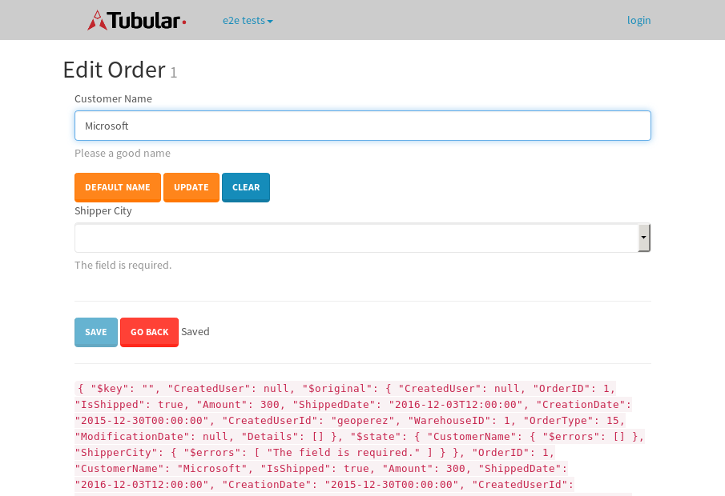

tbColumn.Grid Sorting - 29.927sTests: 5Skipped: 0Failures: 0 should sort data in ascending order then on descending order when sorting by Order Id column - 8.55sTests passed: 100.00%should order data in ascending order when click-sorting an unsorted text column - 5.027sTests passed: 100.00%should order data in descending order when click-sorting an ascending-sorted text column - 5.539sTests passed: 100.00%should order data in ascending order when click-sorting an unsorted date column - 5.036sTests passed: 100.00%should order data in descending order when click-sorting twice an unsorted date column - 5.774sTests passed: 100.00%
tbColumn.Grid Components - 3.737sTests: 3Skipped: 0Failures: 0 should print grid - 1.181s***Skipped***Tests passed: 0%should export grid - 1.482s***Skipped***Tests passed: 0%should show column selector - 1.074sTests passed: 100.00%
tbSingleForm.Form validations - 2.216sTests: 2Skipped: 0Failures: 0 should have an empty required field - 1.411sTests passed: 100.00%should not be able to click on save - 0.804sTests passed: 100.00%
Tubular Filters.tbColumnFilter - 105.888sTests: 12Skipped: 0Failures: 0 should cancel filtering when clicking outside filter-popover - 9.236sTests passed: 100.00%should disable Value text-input for "None" filter - 6.478sTests passed: 100.00%should disable apply button for "None" filter - 6.384sTests passed: 100.00%should decorate popover button when showing data is being filtered for its column - 11.635sTests passed: 100.00%should correctly filter data for the "Equals" filtering option - 8.581sTests passed: 100.00%should correctly filter data for the "Not Equals" filtering option - 8.152sTests passed: 100.00%should correctly filter data for the "Contains" filtering option - 7.909sTests passed: 100.00%should correctly filter data for the "Not Contains" filtering option - 8.005sTests passed: 100.00%should correctly filter data for the "Starts With" filtering option - 6.821sTests passed: 100.00%should correctly filter data for the "Not Starts With" filtering option - 7.316sTests passed: 100.00%should correctly filter data for the "Ends With" filtering option - 7.211sTests passed: 100.00%should correctly filter data for the "Not Ends With" filtering option - 6.851sTests passed: 100.00%
Tubular Filters.tbColumnDateTimeFilter - 131.426sTests: 12Skipped: 0Failures: 0 should cancel filtering when clicking outside filter-popover - 7.111sTests passed: 100.00%should disable Value text-input for "None" filter - 6.342sTests passed: 100.00%should disable apply button for "None" filter - 6.411sTests passed: 100.00%should clear filtering when clicking on Clean button - 17.428sTests passed: 100.00%should decorate popover button when showing data is being filtered for its column - 11.446sTests passed: 100.00%should correctly filter data for the "Equals" filtering option - 6.602sTests passed: 100.00%should correctly filter data for the "Not Equals" filtering option - 6.863sTests passed: 100.00%should correctly filter data for the "Between" filtering option - 11.857sTests passed: 100.00%should correctly filter data for the "Greater-or-equal" filtering option - 11.633sTests passed: 100.00%should corretlly filter data for the "Greater" filtering option - 11.685sTests passed: 100.00%should correctly filter data for the "Less-or-equal" filtering option - 11.429sTests passed: 100.00%should correctly filter data for the "Less" filtering option - 11.668sTests passed: 100.00%
Tubular Filters.tbColumnOptionsFilter - 80.676sTests: 3Skipped: 0Failures: 0 should cancel filtering when clicking outside filter-popover - 9.078sTests passed: 100.00%should decorate popover button when showing data is being filtered for its column - 11.374sTests passed: 100.00%should filter column-elements in accordance to the selected filter when selecting a single option - 48.813sTests passed: 100.00%
Tubular Filters.tbTextSearch - 47.659sTests: 5Skipped: 0Failures: 1 min-chars is not set - 0.813sTests passed: 100.00%should filter data in searchable-column customer name to matching inputted text, starting from 3 characters - 6.748sTests passed: 100.00%should filter data in searchable-column shipper city to matching inputted text, starting from 3 characters - 11.905sTests passed: 100.00%should show clear button when there is inputted text only - 6.383sTests passed: 100.00%should clear filtering when clicking clear button - 16.306sExpected 10 not to be 10.✗Tests passed: 0.00%
tbForm related components.tbCheckboxField - 7.619sTests: 2Skipped: 0Failures: 0 should save changes on "SAVE" - 3.855sTests passed: 100.00%should discard changes on "CANCEL" - 1.715sTests passed: 100.00%
tbForm related components.tbDropDownEditor - 10.644sTests: 5Skipped: 0Failures: 0 should set initial input value to the value of "value" attribute when defined - 1.786sTests passed: 100.00%should show the component name value in a label field when "showLabel" attribute is true - 1.931sTests passed: 100.00%should show a help field equal to this attribute, is present - 1.695sTests passed: 100.00%should submit modifications to item/server when clicking form "Save" - 2.656sTests passed: 100.00%should NOT submit modifications to item/server when clicking form "Cancel" - 1.961sTests passed: 100.00%
tbForm related components.tbTextArea - 15.995sTests: 7Skipped: 0Failures: 0 should set initial input value to the value of "value" attribute when defined - 1.563sTests passed: 100.00%should be invalidated when the number of chars is not in the range of "min" and "max" attributes - 2.858sTests passed: 100.00%should show the component name value in a label field when "showLabel" attribute is true - 1.55sTests passed: 100.00%should show a help field equal to this attribute, is present - 1.571sTests passed: 100.00%should require the field when the attribute "required" is true - 2.272sTests passed: 100.00%should submit modifications to item/server when clicking form "Save" - 3.463sTests passed: 100.00%should NOT submit modifications to item/server when clicking form "Cancel" - 1.927sTests passed: 100.00%
tbForm related components.tbDateEditor - 15.473sTests: 6Skipped: 0Failures: 4 should set initial date value to the value of "value" attribute when defined - 1.882sExpected false to be true.✗Tests passed: 0.00%should be invalidated when the date is not in the range of "min" and "max" attributes - 4.167sExpected false to be true.✗Expected 1 to be less than 1.✗Tests passed: 33.33%should show the component name value in a label field when "showLabel" attribute is true - 1.862sTests passed: 100.00%should show a help field equal to this attribute, is present - 1.807sTests passed: 100.00%should submit modifications to item/server when clicking form "Save" - 2.41sExpected false to be true.✗Tests passed: 0.00%should NOT submit modifications to item/server when clicking form "Cancel" - 2.105sExpected false to be true.✗Tests passed: 0.00%
tbForm related components.tbTypeaheadEditor - 15.782sTests: 7Skipped: 0Failures: 1 should show an options list when there is an API-info/component entered-data - 2.589sTests passed: 100.00%should select the option clicked - 2.023sTests passed: 100.00%should show a "delete" button when an option/match is selected, and delete the option if button is clicked - 2.01sFailed: each key must be a number of string; got boolean✗Tests passed: 50.00%should show a label value equal to the component name when "showLabel" attribue is true - 1.494sTests passed: 100.00%should require a value when "require" attribute is true - 2.687sTests passed: 100.00%should submit modifications to item/server when clicking form "Save" - 2.635sTests passed: 100.00%should NOT submit modifications to item/server when clicking form "Cancel" - 1.656sTests passed: 100.00%
tbForm related components.tbSimpleEditor - 19.675sTests: 9Skipped: 0Failures: 1 should set initial input value to the value of "value" attribute when defined - 1.879sTests passed: 100.00%should be invalidated when the number of chars is not in the range of "min" and "max" attributes - 2.497sTests passed: 100.00%should show the component name value in a label field when "showLabel" attribute is true - 1.784sTests passed: 100.00%should set input placeholder to the value of "placeholder" attribute - 2.994sTests passed: 100.00%should validate the control using the "regex" attribute, if present - 1.611sFailed: each key must be a number of string; got function✗Tests passed: 0.00%should show a help field equal to this attribute, is present - 1.594sTests passed: 100.00%should require the field when the attribute "required" is true - 1.653sTests passed: 100.00%should submit modifications to item/server when clicking form "Save" - 2.926sTests passed: 100.00%should NOT submit modifications to item/server when clicking form "Cancel" - 2.068sTests passed: 100.00%
tbForm related components.tbNumericEditor - 15.361sTests: 7Skipped: 0Failures: 0 should set initial component value to the value of "value" attribute when defined - 1.407sTests passed: 100.00%should be invalidated when the entered number is not in the range of "min" and "max" attributes - 2.215sTests passed: 100.00%should show the component name value in a label field when "showLabel" attribute is true - 2.076sTests passed: 100.00%should show a help field equal to this attribute, is present - 1.856sTests passed: 100.00%should require the field when the attribute "required" is true - 2.172sTests passed: 100.00%should submit modifications to item/server when clicking form "Save" - 2.928sTests passed: 100.00%should NOT submit modifications to item/server when clicking form "Cancel" - 1.988sTests passed: 100.00%
tbForm Connection Error - 2.41sTests: 1Skipped: 0Failures: 0 tbForm connection error functionality - 0.355sTests passed: 100.00%
tbForm Connection Error - 2.47sTests: 1Skipped: 0Failures: 0 tbForm connection error functionality - 0.335sTests passed: 100.00%
tbForm Connection Error - 2.214sTests: 1Skipped: 0Failures: 1 tbForm connection error functionality - 0.336sExpected '' to equal 'No data found'.✗Tests passed: 0.00%
tb Form Date Editor.tbDateEditor - 17.035sTests: 6Skipped: 0Failures: 0 should set initial date value to the value of "value" attribute when defined - 2.226sTests passed: 100.00%should be invalidated when the date is not in the range of "min" and "max" attributes - 2.426sTests passed: 100.00%should show the component name value in a label field when "showLabel" attribute is true - 1.702sTests passed: 100.00%should show a help field equal to this attribute, is present - 1.999sTests passed: 100.00%should submit modifications to item/server when clicking form "Save" - 3.496sTests passed: 100.00%should NOT submit modifications to item/server when clicking form "Cancel" - 2.597sTests passed: 100.00%
tbGridComponents - 8.151sTests: 6Skipped: 0Failures: 0 should add item with newRow method - 2.308sTests passed: 100.00%should add item with newRow method and cancel action - 0.648sTests passed: 100.00%should update item with tbSaveButton - 1.025sTests passed: 100.00%should update item with tbSaveButton and cancel action - 0.807sTests passed: 100.00%should remove item with tbRemoveButton - 0.881sTests passed: 100.00%should remove item with tbRemoveButton and cancel action - 0.753sTests passed: 100.00%
tbGridPager.navigation buttons - 8.432sTests: 1Skipped: 0Failures: 0 should perform no action when clicking on the numbered navigation button corresponding to the current-showing results page - 1.647sTests passed: 100.00%
tbGridPager.navigation buttons.first/non-last results page related functionallity - 3.389sTests: 2Skipped: 0Failures: 0 should disable "first" and "previous" navigation buttons when in first results page - 1.616sTests passed: 100.00%should enable "last" and "next" navigation buttons when in a results page other than last - 1.773sTests passed: 100.00%
tbGridPager.navigation buttons.last/non-first results page related functionallity - 3.395sTests: 2Skipped: 0Failures: 0 should disable "last" and "next" navigation buttons when in last results page - 1.582sTests passed: 100.00%should enable "first" and "previous" navigation buttons when in a results page other than first - 1.813sTests passed: 100.00%
tbGridPager.page navigation - 5.986sTests: 5Skipped: 0Failures: 0 should go to next results page when clicking on next navigation button - 1.35sTests passed: 100.00%should go to previous results page when clicking on previous navigation button - 1.36sTests passed: 100.00%should go to last results page when clicking on last navigation button - 1.046sTests passed: 100.00%should go to first results page when clicking on first navigation button - 1.213sTests passed: 100.00%should go to corresponding results page when clicking on a numbered navigation button - 1.017sTests passed: 100.00%
tbGridPagerInfo - 5.059sTests: 2Skipped: 0Failures: 0 should show text in accordance to numbered of filter rows and current results-page - 1.312sTests passed: 100.00%should show count in footer - 0.424sTests passed: 100.00%
tbHttp - 22.892sTests: 8Skipped: 0Failures: 0 should be authenticated - 2.9sTests passed: 100.00%retrieve data - 3.636sTests passed: 100.00%should not login bad credentials - 2.294sTests passed: 100.00%should have a refresh token - 2.229sTests passed: 100.00%should remove authentication - 3.486sTests passed: 100.00%get method-Is not authenticated - 2.31sTests passed: 100.00%post method-Is not authenticated - 2.244sTests passed: 100.00%should regenerate access token on post - 3.792sTests passed: 100.00%
LocalData.Grid Local Data Sorting - 6.825sTests: 4Skipped: 0Failures: 1 should order data in ascending order when click-sorting an unsorted text column - 1.653sTests passed: 100.00%should order data in descending order when click-sorting an ascending-sorted text column - 1.765sTests passed: 100.00%should correctly filter data for the "Contains" filtering option - 1.517sFailed: Element is not currently interactable and may not be manipulated✗Tests passed: 0.00%should correctly filter data for the "Contains" with ENTER key - 1.889sTests passed: 100.00%
OData.Grid OData Sorting - 31.19sTests: 7Skipped: 0Failures: 1 should order data in ascending order when click-sorting an unsorted numeric column - 5.102sTests passed: 100.00%should order data in descending order when click-sorting an ascending-sorted numeric column - 4.049sTests passed: 100.00%should order data in ascending order when click-sorting an unsorted text column - 3.941sTests passed: 100.00%should order data in descending order when click-sorting an ascending-sorted text column - 3.987sTests passed: 100.00%should order data in ascending order when click-sorting an unsorted date column - 4.312sTests passed: 100.00%should order data in descending order when click-sorting an ascending-sorted date column - 5.457sTests passed: 100.00%should correctly filter data for the "Contains" filtering option - 4.341sFailed: Element is not enabled✗Tests passed: 0.00%
tbPageSizeSelctor - 14.481sTests: 4Skipped: 0Failures: 0 should filter up to 10 data rows per page when selecting a page size of "10" - 2.742sTests passed: 100.00%should filter up to 20 data rows per page when selecting a page size of "20" - 2.374sTests passed: 100.00%should filter up to 50 data rows per page when selecting a page size of "50" - 4.408sTests passed: 100.00%should filter up to 100 data rows per page when selecting a page size of "100" - 3.361sTests passed: 100.00%
tbRowSelectable - 14.507sTests: 2Skipped: 0Failures: 0 selected rows - 7.872sTests passed: 100.00%unselected rows - 5.042sTests passed: 100.00%
tbSingleForm.Form fields - 12.911sTests: 7Skipped: 0Failures: 1 should load correct info - 1.032sTests passed: 100.00%should change customer name - 0.913sTests passed: 100.00%should save it - 3.291sFailed: Element is not enabled✗Tests passed: 0.00%should clear the inputs - 0.86sTests passed: 100.00%should update - 1.284sTests passed: 100.00%should reset editor - 2.83sTests passed: 100.00%should not save if not Changes - 2.7sTests passed: 100.00%
tbSingleForm.Form validations - 2.049sTests: 2Skipped: 0Failures: 0 should load correct info - 0.93sTests passed: 100.00%should not be able to click on save - 1.119sTests passed: 100.00%
tubularTemplateServiceModule.#createColumns() - 1.546sTests: 2Skipped: 0Failures: 0 should return an array with 7 elements - 0.789sTests passed: 100.00%first element should match - 0.756sTests passed: 100.00%
tubularTemplateServiceModule.#generateFieldsArray() - 1.589sTests: 2Skipped: 0Failures: 0 should return an array with 7 elements - 0.766sTests passed: 100.00%first element should match - 0.823sTests passed: 100.00%
tubularTemplateServiceModule.#generatePopup() - 0.792sTests: 1Skipped: 0Failures: 0 should html match - 0.792sTests passed: 100.00%
tubularTemplateServiceModule.#getEditorTypeByDateType() - 3.187sTests: 4Skipped: 0Failures: 0 should be tbDateTimeEditor - 0.884sTests passed: 100.00%should be tbNumericEditor - 0.75sTests passed: 100.00%should be tbCheckboxField - 0.833sTests passed: 100.00%should be tbSimpleEditor - 0.719sTests passed: 100.00%
tubularTemplateServiceModule.#generateForm() - 2.548sTests: 3Skipped: 0Failures: 0 should single layout html match - 0.717sTests passed: 100.00%should two columns layout html match - 0.832sTests passed: 100.00%should three columns layout html match - 0.998sTests passed: 100.00%
tubularTemplateServiceModule.#generateCells() - 0.718sTests: 1Skipped: 0Failures: 0 should html match - 0.718sTests passed: 100.00%
tubularTemplateServiceModule.#generateGrid() - 0.757sTests: 1Skipped: 0Failures: 0 should html match - 0.757sTests passed: 100.00%


{kind=link}